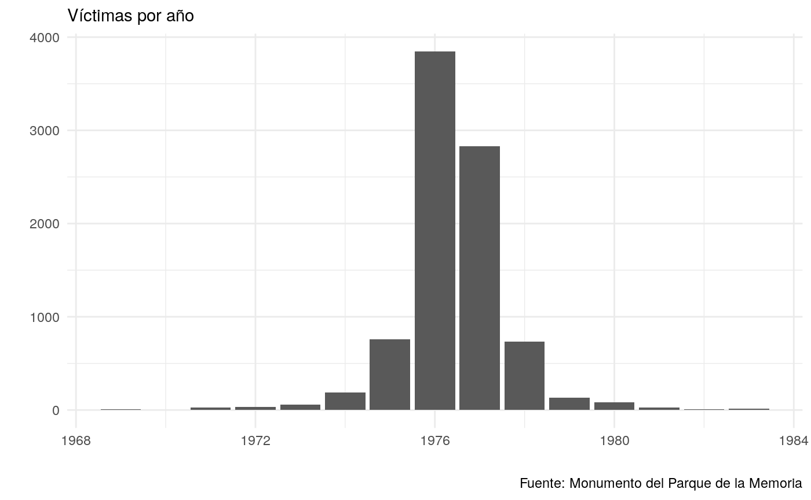
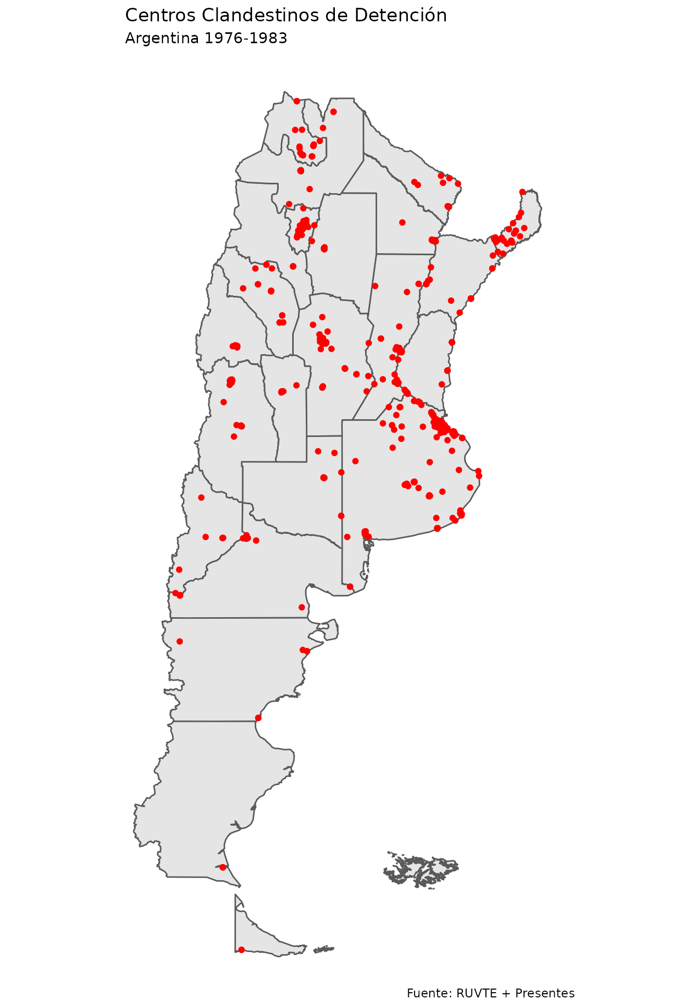

presentes
vignette.Rmdpresentes para REl paquete presentes tiene por objetivo facilitar el acceso a los datos que figuran en los registros estatales sobre las víctimas de la dictadura militar que tuvo lugar entre el 24 de marzo de 1976 y el 10 de diciembre de 1983 en Argentina.
Las fuentes principales de los datasets incluidos en el paquete son –en primer lugar– el Registro Único de Víctimas del Terrorismo de Estado (RUVTE) dependiente de la Secretaría de Derechos Humanos y Pluralismo Cultural del Ministerio de Justicia y Derechos Humanos de la Nación, creado por Resolución 1261/2014 de dicho Ministerio (https://datos.gob.ar/dataset/justicia-registro-unificado-victimas-terrorismo-estado--ruvte-). En segundo lugar, el Monumento a las Víctimas del Terrorismo de Estado, realizado por el Consejo de Gestión del Parque de la Memoria y del Monumento a las Víctimas del Terrorismo de Estado, creado por la ley 3078 de la Ciudad de Buenos Aires (http://basededatos.parquedelamemoria.org.ar/). Ambos registros recogen información de víctimas asesinadas o detenidas/desaparecidas aún antes de la fecha del inicio formal del golpe de estado militar.
En estos listados figuran las víctimas que pudieron identificarse hasta la actualidad. Ambos registros son actualizados periódicamente con la nueva información que pueda recopilarse, tanto espontáneamente o como fruto de los juicios en trámite, como parte de una política pública de Verdad, Memoria y Justicia. Hay que aclarar que estos listados no están completos, y que los organismos de derechos humanos del país (que son parte del órgano de gestión del Monumento del Parque de la Memoria, por ejemplo) estiman que la cantidad de víctimas es de 30.000 detenidos desaparecidos.
Compartimos esta última apreciación, y por ello decimos que estos 30.000 compañeres detenidos desaparecidos, aún están presentes entre nosotros, ahora y siempre.
En el paquete se encuentran los siguientes datasets
apodos: contiene la información de los apodos que utilizaron las víctimas, clasificado por el número identificador único del ruvte, nombre completo y apellido materno.
centros_clandestinos_de_detención: Contiene el listado de los 762 centros clandestinos de detención (CCD) que se usaron en todo el país, con variables sobre el propietario del lugar de emplazamiento, la denominación, si hoy funciona allí un espacio de memoria, la ubicación completa, y la longitud y la latitud, lo que permite georreferenciarlos.
victimas_accionar_represivo_ilegal: El listado de víctimas con denuncia formal del RUVTE. Incluye 8753 registros al día de la fecha, con datos sobre el año de la denuncia, la tipificación del RUVTE, datos personales, edad al momento del hecho, fecha de la detención o asesinato, lugar de la detención o secuestro, lugar de hallazgo de los restos, provincia y país de nacimiento, y si tiene fotografía, entre otros.
victimas_accionar_represivo_ilegal_sin_denuncia_formal: El listado de víctimas sin denuncia formal del RUVTE. Incluye 784 registros al día de la fecha, con datos sobre el año de la denuncia, la tipificación del RUVTE, datos personales, edad al momento del hecho, fecha del secuestro o asesinato, lugar de la detención o secuestro, lugar de hallazgo de los restos,provincia y país de nacimiento, y si tiene fotografía, y la fuente de la información.
parque_de_la_memoria: Esta es la base de datos del Monumento a las Víctimas del Terrorismo de Estado. Incluye 8751 víctimas al día de la fecha, con variables sobre el nombre, edad, si estaba embarazada, el estado (detenido/a desaparecido/a o asesinado/a), el año del secuestro o asesinato, el domicilio, estado civil, estudios cursados, fecha de nacimiento, lugar del secuestro o asesinato, ocupaciones, apodos, cantidad de hijos, victimas relacionadas, casos relacionados, militancia en organizaciones, artículos en diarios que hablen sobre ella, entre otras. Asimismo, se incluye un link a la página del Monumento.
Con estos datos se pueden hacer numerosos análisis sobre el accionar del terrorismo de Estado en la Argentina. Por ejemplo, puede verse que fueron los primeros años de la dictadura militar aquellos en donde se produjeron mayor cantidad de violaciones a los derechos humanos. O también se puede analizar la edad de las víctimas al momento del secuestro/asesinato.
ggplot(data = presentes::parque_de_la_memoria)+
geom_histogram(aes(x = as.numeric(ano_en_monumento)), stat = "count")+
labs(subtitle= "Víctimas por año",
x = "", y = "",
caption = "Fuente: Monumento del Parque de la Memoria")+
theme_minimal()
ggplot(data = presentes::parque_de_la_memoria)+
geom_freqpoly(aes(x = as.numeric(edad),
color = factor(sexo, labels = c("Fem", "Masc", "NA"))), stat = "count", size = 1)+
labs(subtitle= "Edad al momento del hecho",
x = "edad", y = "cant",
caption = "Fuente: Monumento del Parque de la Memoria",
color = "Sexo")+
theme_minimal()
El dataset centros_clandestinos_de_detención incluye la longitud y la latitud de los CCD. Con ello pueden graficarse sobre un mapa de nuesto país.
argentina <- st_read("https://github.com/Demzayat/varios/raw/master/provinciasND.geojson")
#> Reading layer `provinciasND' from data source `https://github.com/Demzayat/varios/raw/master/provinciasND.geojson' using driver `GeoJSON'
#> Simple feature collection with 24 features and 9 fields
#> geometry type: MULTIPOLYGON
#> dimension: XY
#> bbox: xmin: -75.848 ymin: -89.997 xmax: -22.51 ymax: -21.745
#> epsg (SRID): 4326
#> proj4string: +proj=longlat +datum=WGS84 +no_defs
ccd <- presentes::centros_clandestinos_detencion %>%
filter(!is.na(lon)) %>%
st_as_sf(coords = c("lon", "lat"), crs = 4326, remove = FALSE)
ggplot()+
geom_sf(data = argentina)+
geom_sf(data = ccd, color = "red")+
coord_sf(xlim = c(-52, -74), ylim = c(-20, -56), expand = FALSE)+
labs(title = "Centros Clandestinos de Detención",
subtitle = "Argentina 1976-1983",
caption = "Fuente: RUVTE + Presentes")+
theme_void()
También utilizando leaflet podemos realizar un mapa interactivo que muestre las características de cada CCD
labs <- lapply(seq(nrow(centros_clandestinos_detencion)), function(i) {
paste0( '<p>', centros_clandestinos_detencion[i, "lugar_emplazamiento_propiedad"], '<p></p>',
'denominacion: ',centros_clandestinos_detencion[i, "denominacion"], ', ',
'espacio_de_memoria: ',centros_clandestinos_detencion[i, "espacio_de_memoria"],'</p><p>',
'ubicacion: ',centros_clandestinos_detencion[i, "ubicacion"], '</p>' )
})
leaflet(data = centros_clandestinos_detencion) %>%
addTiles() %>%
addMarkers(clusterOptions = markerClusterOptions(),
lng = ~lon, lat = ~lat,
label = lapply(labs, htmltools::HTML))Este mismo dataset contiene la variable lugar_emplazamiento_propiedad, sobre la titularidad de la propiedad donde se instaló el CCD. La mayoría son estatales (policía y fuerzas militares), pero también hay unos cincuenta en propiedades no estatales. Podemos ver cuáles son en el siguiente mapa navegable (e interactivo).
# Establecimientos no estatales
establecimientos <- presentes::centros_clandestinos_detencion %>%
filter(lugar_emplazamiento_propiedad %in% c("ESTABLECIMIENTO PRIVADO","PARTICULAR (VIVIENDA O SIMILAR)","SIN ESTABLECER PROPIEDAD","EJÉRCITO / ESTABLECIMIENTO PRIVADO","PARTICULAR (LOCAL)"))
labs <- lapply(seq(nrow(establecimientos)), function(i) {
paste0( '<p>', establecimientos[i, "lugar_emplazamiento_propiedad"], '<p></p>',
'denominacion: ',establecimientos[i, "denominacion"], ', ',
'espacio_de_memoria: ',establecimientos[i, "espacio_de_memoria"],'</p><p>',
'ubicacion: ',establecimientos[i, "ubicacion"], '</p>' )
})
leaflet(data = establecimientos) %>%
addTiles() %>%
addMarkers(clusterOptions = markerClusterOptions(),
lng = ~lon, lat = ~lat,
label = lapply(labs, htmltools::HTML))La base de parque_de_la_memoria también tiene, para los casos con datos, la pertenencia de la víctima a alguna organización militante. Puede armarse un cuadro con las primeras 50 organizaciones.
orga <- unnest(presentes::parque_de_la_memoria, militancia) %>%
separate(listado, into = c("orga1", "orga2", "orga3"), sep =" - ")
orga %>%
select(orga1,orga2,orga3) %>%
gather(value = Organización) %>%
group_by(Organización) %>%
filter(!is.na(Organización)) %>%
summarise(Proporción = n()/nrow(.)) %>%
arrange(desc(Proporción)) %>%
mutate(Proporción = scales::percent(Proporción)) %>%
top_n(50) %>%
knitr::kable()
#> Selecting by Proporción| Organización | Proporción |
|---|---|
| Montoneros | 18.9% |
| Partido Revolucionario de los Trabajadores | 9.1% |
| Ejército Revolucionario del Pueblo (PRT-ERP) | 9.0% |
| Juventud Peronista (JP) | 8.3% |
| Juventud Universitaria Peronista (JUP) | 5.8% |
| Militante sindical | 3.8% |
| Partido Comunista Marxista Leninista (PCML) | 2.8% |
| Partido Revolucionario de los Trabajadores (PRT) | 2.7% |
| Ejército Revolucionario del Pueblo (ERP) | 2.3% |
| Partido Comunista (PC) | 2.2% |
| Partido Socialista de los Trabajadores (PST) | 2.1% |
| Unión de Estudiantes Secundarios (UES) | 2.0% |
| Peronista | 1.5% |
| Organización Comunista Poder Obrero (OCPO) | 1.4% |
| Juventud Guevarista (JG) | 1.3% |
| Juventud de Trabajadores Peronistas (JTP) | 1.2% |
| Partido Justicialista (PJ) | 1.1% |
| Vanguardia Comunista (VC) | 0.9% |
| Federación Juvenil Comunista (FJC) | 0.8% |
| Partido por la Victoria del Pueblo | 0.6% |
| Uruguay (PVP) | 0.6% |
| Movimiento de Izquierda Revolucionaria | 0.5% |
| Chile (MIR) | 0.5% |
| Fuerzas Armadas Peronistas (FAP) | 0.5% |
| Partido Peronista Auténtico (PPA) | 0.5% |
| Peronismo de Base (PB) | 0.5% |
| Unión Obrera Metalúrgica (UOM) | 0.4% |
| Movimiento de Liberación Nacional | 0.4% |
| Tupamaros | 0.4% |
| Uruguay (MLN-T) | 0.4% |
| Fuerzas Armadas Revolucionarias (FAR) | 0.4% |
| Centro De Estudiantes | 0.4% |
| Frente Revolucionario 17 de Octubre (FR 17) | 0.4% |
| Partido Comunista Revolucionario (PCR) | 0.4% |
| 22 de agosto (ERP-22) | 0.3% |
| Ejército Revolucionario del Pueblo | 0.3% |
| Grupos de Acción Unificadora | 0.3% |
| Uruguay (GAU) | 0.3% |
| FAL | 0.3% |
| Partido Comunista | 0.3% |
| Asociación de Trabajadores de la Universidad Nacional de La Plata (ATULP) | 0.3% |
| Sindicato de Mecánicos y Afines del Transporte Automotor de la República Argentina (SMATA) | 0.2% |
| Unión Cívica Radical (UCR) | 0.2% |
| Uruguay | 0.2% |
| Confederación de Trabajadores de la Educación de la República Argentina (CTERA) | 0.2% |
| Frente Amplio | 0.2% |
| Movimiento Villero Peronista (MVP) | 0.2% |
| Sindicato Luz y Fuerza | 0.2% |
| Ligas Agrarias | 0.2% |
| Chile (PCCh) | 0.2% |
| Resistencia Libertaria (RL) | 0.2% |